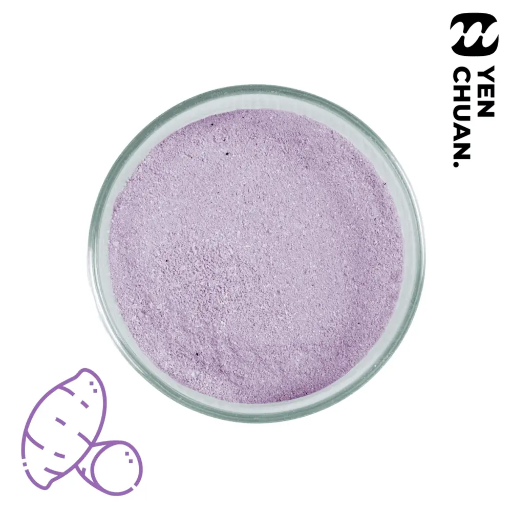

Purple sweet potato camo powder
Purple sweet potato is popular in Japan and other countries thanks to its sweet taste and unique colours.
Bring this popular food to your bubble tea with our purple sweet potato camo powder!
Wholesale prices depend on volume and destination. Our sales team or AI assistant replies with MOQ, lead time and shipping options.
Details
Unit size: 1kg
Units per carton: 20
Storage conditions: Room temperature
MOQ: 5 cartons
How to use:
- Add a small amount of water to the powder
- Mix to form a paste
- Smear the paste onto the inner sides of the cup
- Pour in fresh milk or other drinks of your choice
And presto, you have a beautiful artwork on your cup!
 Cookies & cream camo powder
Cookies & cream camo powder Sea salt cheese camo powder
Sea salt cheese camo powder White chocolate camo powder
White chocolate camo powder